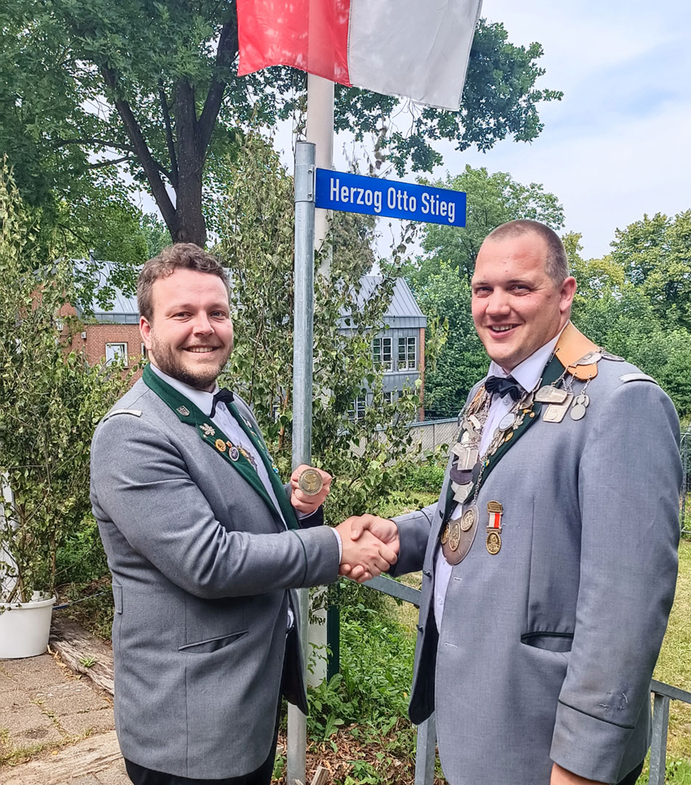
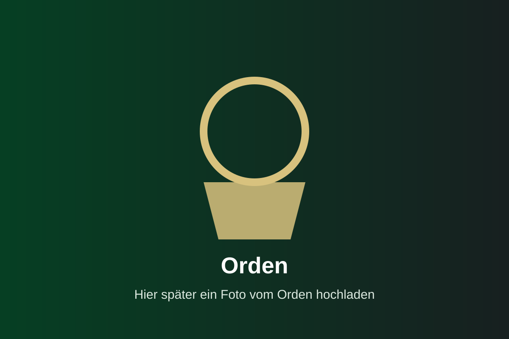

Königshaus
Unsere Könige, Königsjahre und besondere Erinnerungen der Fahnenjunker.
Amtierender König
Christopher Butz
Königsjahr 2025/2026
Hier kann später ein kurzer Text zum amtierenden König ergänzt werden: Anlass, besondere Momente oder ein kurzer Gruß an die Fahnenjunker.

♛ Königskette & Orden

Wenn du echte Fotos der Königskette oder Orden hast, lade sie später mit genau diesen Dateinamen hoch: koenigskette.jpg und orden.jpg. Danach passe ich dir die Seite darauf an oder du ersetzt hier einfach die Bildnamen.
📷 Königsbilder
🏅 Vergangene Könige
2025/2026Christopher ButzAmtierender König
2024/2025Ansgar DrosteKönigsjahr